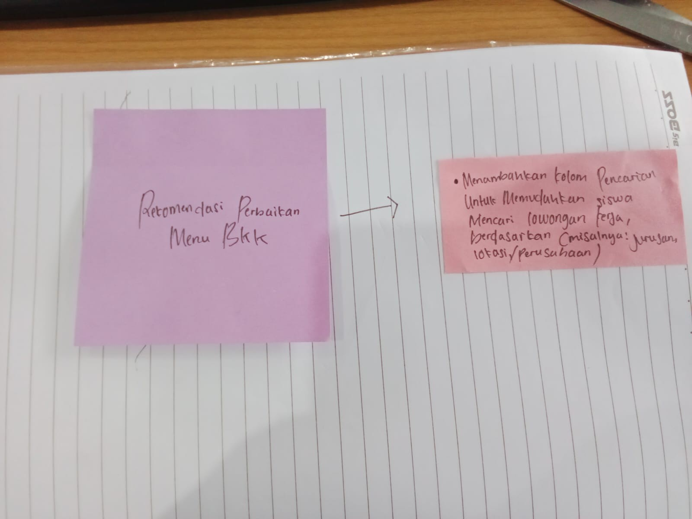
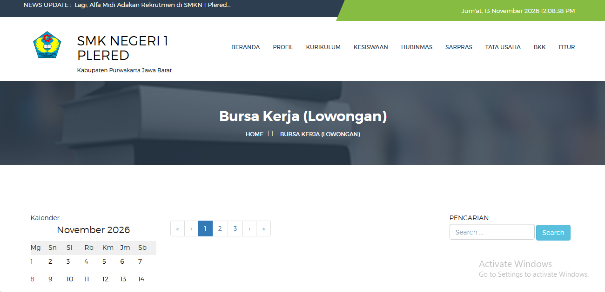
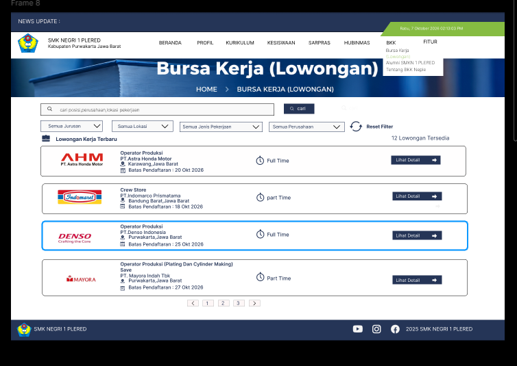

Project Overview
Gambaran umum mengenai proyek evaluasi dan perbaikan tampilan website sekolah.
Perancangan Ulang Website Sekolah
Proyek ini berfokus pada evaluasi tampilan dan pengalaman pengguna website sekolah. Tujuannya adalah membuat navigasi lebih mudah dipahami, informasi lebih terstruktur, serta tampilan website lebih menarik dan nyaman digunakan.
Melalui proyek ini, dilakukan pengamatan terhadap tampilan website, identifikasi permasalahan, penyusunan rekomendasi, hingga pembuatan rancangan desain sebagai solusi perbaikan.
Solution Detail
Informasi mengenai peran, waktu pengerjaan, dan alat yang digunakan.
My Role
UI/UX Designer, melakukan analisis permasalahan, menyusun rekomendasi, dan membuat desain perbaikan.
Timeline
September 2026. Meliputi proses evaluasi, identifikasi masalah, perancangan, dan perbaikan.
Tools
Figma untuk membuat desain dan prototype, serta browser untuk melakukan pengujian website.
Permasalahan
Beberapa permasalahan yang ditemukan saat mengevaluasi website.
Struktur Navigasi
Pengelompokan menu dan submenu masih perlu diperjelas agar pengguna lebih mudah menemukan informasi.
Pengelompokan Informasi
Informasi pada beberapa bagian website perlu disusun lebih teratur agar lebih mudah dibaca dan dipahami.
Design Process
Tahapan yang dilakukan untuk memahami permasalahan dan menentukan solusi desain.

Identifikasi dan Analisis Masalah
Proses diawali dengan mengamati website dan mencatat bagian yang perlu diperbaiki. Hasil pengamatan kemudian dikelompokkan menggunakan sticky notes untuk membantu menentukan prioritas perbaikan.
Menentukan Solusi
Setelah masalah ditemukan, dilakukan penyusunan rekomendasi dan rancangan tampilan yang lebih mudah dipahami oleh pengguna.
Proses Perbaikan Website
Dokumentasi proses perbaikan website yang menampilkan perubahan dan penerapan rekomendasi desain.
Video dokumentasi proses perbaikan website
Perbandingan Tampilan Website
Perbandingan tampilan website sebelum dan sesudah dilakukan perbaikan pada versi desktop.

Before - Desktop
Tampilan website sebelum dilakukan perbaikan.

After - Desktop
Tampilan website setelah dilakukan perbaikan.
Lihat Hasil Prototype
Klik tombol di bawah untuk melihat rancangan desain website yang telah dibuat menggunakan Figma.
Buka Prototype Figma ↗Kesimpulan
Berdasarkan proses evaluasi dan perancangan yang telah dilakukan, dapat disimpulkan bahwa perbaikan tampilan website diperlukan untuk meningkatkan kemudahan pengguna dalam mengakses informasi.
Melalui perbaikan struktur navigasi,informasi, dan tampilan desain, diharapkan website menjadi lebih teratur, menarik, dan mudah digunakan.